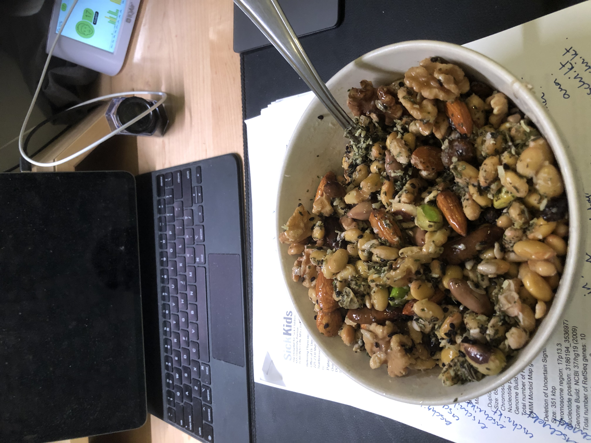

Ingredients
- 2 cups of Natto (do not use too much, or else water will pool at the bottom)
- 1 squirt of natto starter, or 1 natto frozen square cut into 9 cubes
Directions
- Soak soy beans over night for at least 24 hours until bubbles appear on surface. The longer you soak the less water you need to keep in the instant pot as the soy beans will soak up enough water to last through the feremntation process.
- Drain water, and cover with water in instant pot with bean setting and pressure cook for 20 min. Drain water after cooking
- Make sure your glass container and utensils are all sterile
- Add 1-2 squirts of the natto starter to cooked soy bean while still hot from cooking. Mix thoroughly (I toss, but you can also use a sterile spatula to mix). Do not add water as the water will pool to the bottom and prevent the fermentation. The longer you soak the beans the easier it will be to ferment.
- Pour soybeans into glass container
- Cover with saran wrap (I use bees wax as I like to avoid plastic use) and poke holes, then push the saran wrap so that it touches the natto. Add another layer of saran wrap so that there is a layer of air between the first layer. Poke holes again. This will prevent water from pooling into your natto.
- no water is needed as there is plenty of water in the soy beans. leave the vent open on the instant pot. Incubate at 42C for 36 hours (yogurt setting on Instant Pot) or until bacteria have fully colonized the beans. You can see a ring around the soybeans indicating that it is fermented. Should see a halo after 24 hours.